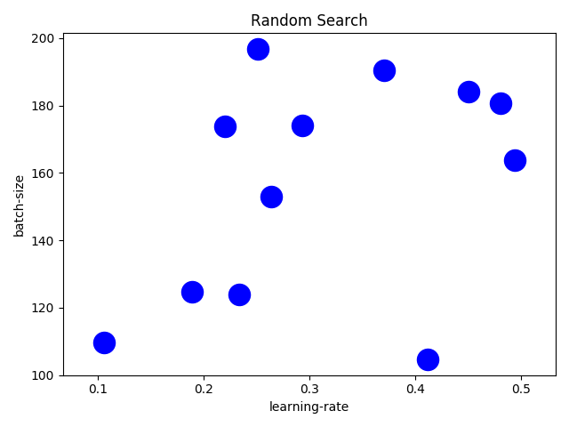
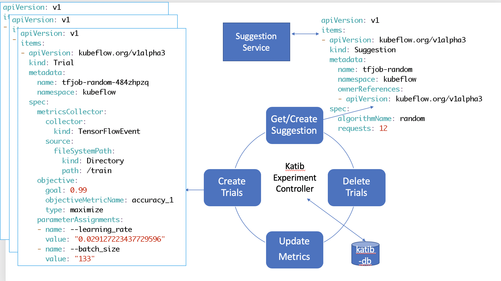
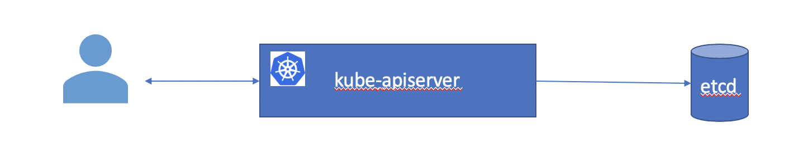
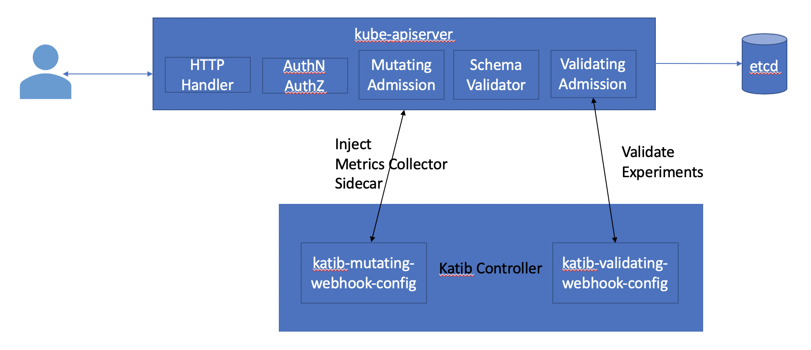

Random Search
Random search is a black box algorithm for searching for an optimal hyperparameter vector. It assumes nothing about the model and trials can be run in parallel.
Random search selects points at random from the entire search space.

Random search provides a good coverage for multiple hyperparameters in the search space. If you want a generic baseline, it is always a good idea to start with a Random search.
Now let us create a random search experiment using Katib.
Experiment
Let us start by creating an experiment.
Random search experiment
apiVersion: "kubeflow.org/v1alpha3"
kind: Experiment
metadata:
namespace: kubeflow
name: tfjob-random
spec:
parallelTrialCount: 3
maxTrialCount: 12
maxFailedTrialCount: 3
objective:
type: maximize
goal: 0.99
objectiveMetricName: accuracy_1
algorithm:
algorithmName: random
metricsCollectorSpec:
source:
fileSystemPath:
path: /train
kind: Directory
collector:
kind: TensorFlowEvent
parameters:
- name: --learning_rate
parameterType: double
feasibleSpace:
min: "0.01"
max: "0.05"
- name: --batch_size
parameterType: int
feasibleSpace:
min: "100"
max: "200"
trialTemplate:
goTemplate:
rawTemplate: |-
apiVersion: "kubeflow.org/v1"
kind: TFJob
metadata:
name: {{.Trial}}
namespace: {{.NameSpace}}
spec:
tfReplicaSpecs:
Worker:
replicas: 1
restartPolicy: OnFailure
template:
spec:
containers:
- name: tensorflow
image: gcr.io/kubeflow-ci/tf-mnist-with-summaries:1.0
imagePullPolicy: IfNotPresent
command:
- "python"
- "/var/tf_mnist/mnist_with_summaries.py"
- "--log_dir=/train/metrics"
{{- with .HyperParameters}}
{{- range .}}
- "{{.Name}}={{.Value}}"
{{- end}}
{{- end}}

cd $HOME/tutorial/examples/v1alpha3
kubectl apply -f tfjob-random.yaml
Sample Output
experiment.kubeflow.org/tfjob-random createdCheck that the Experiment tfjob-random has started.
kubectl -n kubeflow get experiment
Sample Output
NAME STATUS AGE tfjob-random Running 98sCheck the details of the Experiment tfjob-random
kubectl -n kubeflow get experiment tfjob-random -o json
Sample Output
{
"apiVersion": "kubeflow.org/v1alpha3",
"kind": "Experiment",
"metadata": {
"annotations": {
"kubectl.kubernetes.io/last-applied-configuration": "{\"apiVersion\":\"kubeflow.org/v1alpha3\",\"kind\":\"Experiment\",\"metadata\":{\"annotations\":{},\"name\":\"tfjob-random\",\"namespace\":\"kubeflow\"},\"spec\":{\"algorithm\":{\"algorithmName\":\"random\"},\"maxFailedTrialCount\":3,\"maxTrialCount\":12,\"metricsCollectorSpec\":{\"collector\":{\"kind\":\"TensorFlowEvent\"},\"source\":{\"fileSystemPath\":{\"kind\":\"Directory\",\"path\":\"/train\"}}},\"objective\":{\"goal\":0.99,\"objectiveMetricName\":\"accuracy_1\",\"type\":\"maximize\"},\"parallelTrialCount\":3,\"parameters\":[{\"feasibleSpace\":{\"max\":\"0.05\",\"min\":\"0.01\"},\"name\":\"--learning_rate\",\"parameterType\":\"double\"},{\"feasibleSpace\":{\"max\":\"200\",\"min\":\"100\"},\"name\":\"--batch_size\",\"parameterType\":\"int\"}],\"trialTemplate\":{\"goTemplate\":{\"rawTemplate\":\"apiVersion: \\\"kubeflow.org/v1\\\"\\nkind: TFJob\\nmetadata:\\n name: {{.Trial}}\\n namespace: {{.NameSpace}}\\nspec:\\n tfReplicaSpecs:\\n Worker:\\n replicas: 1 \\n restartPolicy: OnFailure\\n template:\\n spec:\\n containers:\\n - name: tensorflow \\n image: gcr.io/kubeflow-ci/tf-mnist-with-summaries:1.0\\n imagePullPolicy: IfNotPresent\\n command:\\n - \\\"python\\\"\\n - \\\"/var/tf_mnist/mnist_with_summaries.py\\\"\\n - \\\"--log_dir=/train/metrics\\\"\\n {{- with .HyperParameters}}\\n {{- range .}}\\n - \\\"{{.Name}}={{.Value}}\\\"\\n {{- end}}\\n {{- end}}\"}}}}\n"
},
"creationTimestamp": "2019-10-27T02:46:02Z",
"finalizers": [
"update-prometheus-metrics"
],
"generation": 2,
"name": "tfjob-random",
"namespace": "kubeflow",
"resourceVersion": "21979",
"selfLink": "/apis/kubeflow.org/v1alpha3/namespaces/kubeflow/experiments/tfjob-random",
"uid": "e9f888cb-f863-11e9-88ef-080027c5bc64"
},
"spec": {
"algorithm": {
"algorithmName": "random",
"algorithmSettings": null
},
"maxFailedTrialCount": 3,
"maxTrialCount": 12,
"metricsCollectorSpec": {
"collector": {
"kind": "TensorFlowEvent"
},
"source": {
"fileSystemPath": {
"kind": "Directory",
"path": "/train"
}
}
},
"objective": {
"goal": 0.99,
"objectiveMetricName": "accuracy_1",
"type": "maximize"
},
"parallelTrialCount": 3,
"parameters": [
{
"feasibleSpace": {
"max": "0.05",
"min": "0.01"
},
"name": "--learning_rate",
"parameterType": "double"
},
{
"feasibleSpace": {
"max": "200",
"min": "100"
},
"name": "--batch_size",
"parameterType": "int"
}
],
"trialTemplate": {
"goTemplate": {
"rawTemplate": "apiVersion: \"kubeflow.org/v1\"\nkind: TFJob\nmetadata:\n name: {{.Trial}}\n namespace: {{.NameSpace}}\nspec:\n tfReplicaSpecs:\n Worker:\n replicas: 1 \n restartPolicy: OnFailure\n template:\n spec:\n containers:\n - name: tensorflow \n image: gcr.io/kubeflow-ci/tf-mnist-with-summaries:1.0\n imagePullPolicy: IfNotPresent\n command:\n - \"python\"\n - \"/var/tf_mnist/mnist_with_summaries.py\"\n - \"--log_dir=/train/metrics\"\n {{- with .HyperParameters}}\n {{- range .}}\n - \"{{.Name}}={{.Value}}\"\n {{- end}}\n {{- end}}"
}
}
},
"status": {
"completionTime": null,
"conditions": [
{
"lastTransitionTime": "2019-10-27T02:46:02Z",
"lastUpdateTime": "2019-10-27T02:46:02Z",
"message": "Experiment is created",
"reason": "ExperimentCreated",
"status": "True",
"type": "Created"
}
],
"currentOptimalTrial": {
"observation": {
"metrics": null
},
"parameterAssignments": null
},
"startTime": "2019-10-27T02:46:02Z"
}
}
Under the hood, Katib controller is looping in a reconcile loop to satisfy this Experiment request.

Suggestions
You can see Katib creating Suggestions using the random algorithm.
kubectl -n kubeflow get suggestions tfjob-random -o yaml
Sample Output - before suggestions are ready
apiVersion: kubeflow.org/v1alpha3
kind: Suggestion
metadata:
creationTimestamp: "2019-10-27T02:57:58Z"
generation: 1
name: tfjob-random
namespace: kubeflow
ownerReferences:
- apiVersion: kubeflow.org/v1alpha3
blockOwnerDeletion: true
controller: true
kind: Experiment
name: tfjob-random
uid: 94e07a51-f865-11e9-88ef-080027c5bc64
resourceVersion: "24296"
selfLink: /apis/kubeflow.org/v1alpha3/namespaces/kubeflow/suggestions/tfjob-random
uid: 94e5930d-f865-11e9-88ef-080027c5bc64
spec:
algorithmName: random
requests: 3
status:
conditions:
- lastTransitionTime: "2019-10-27T02:57:58Z"
lastUpdateTime: "2019-10-27T02:57:58Z"
message: Suggestion is created
reason: SuggestionCreated
status: "True"
type: Created
- lastTransitionTime: "2019-10-27T02:57:58Z"
lastUpdateTime: "2019-10-27T02:57:58Z"
message: Deployment is not ready
reason: DeploymentNotReady
status: "False"
type: DeploymentReady
startTime: "2019-10-27T02:57:58Z"
We now have a Suggestion resource created. The Katib Suggestion Service takes control and generates a deployment to run the specified Suggestion.
 The suggestion service provides suggestions based on the current state of the system. On each new suggestion request, it reevaluates and provides the next best set of suggestions.
The suggestion service provides suggestions based on the current state of the system. On each new suggestion request, it reevaluates and provides the next best set of suggestions.
Sample Output - after suggestions are ready
apiVersion: v1
items:
- apiVersion: kubeflow.org/v1alpha3
kind: Suggestion
metadata:
creationTimestamp: "2019-10-27T02:57:58Z"
generation: 10
name: tfjob-random
namespace: kubeflow
ownerReferences:
- apiVersion: kubeflow.org/v1alpha3
blockOwnerDeletion: true
controller: true
kind: Experiment
name: tfjob-random
uid: 94e07a51-f865-11e9-88ef-080027c5bc64
resourceVersion: "25675"
selfLink: /apis/kubeflow.org/v1alpha3/namespaces/kubeflow/suggestions/tfjob-random
uid: 94e5930d-f865-11e9-88ef-080027c5bc64
spec:
algorithmName: random
requests: 12
status:
conditions:
- lastTransitionTime: "2019-10-27T02:57:58Z"
lastUpdateTime: "2019-10-27T02:57:58Z"
message: Suggestion is created
reason: SuggestionCreated
status: "True"
type: Created
- lastTransitionTime: "2019-10-27T02:58:16Z"
lastUpdateTime: "2019-10-27T02:58:16Z"
message: Deployment is ready
reason: DeploymentReady
status: "True"
type: DeploymentReady
- lastTransitionTime: "2019-10-27T02:59:16Z"
lastUpdateTime: "2019-10-27T02:59:16Z"
message: Suggestion is running
reason: SuggestionRunning
status: "True"
type: Running
startTime: "2019-10-27T02:57:58Z"
suggestionCount: 12
suggestions:
- name: tfjob-random-npjpbgmd
parameterAssignments:
- name: --learning_rate
value: "0.03684477847537918"
- name: --batch_size
value: "112"
- name: tfjob-random-mmc8dqvq
parameterAssignments:
- name: --learning_rate
value: "0.010960280128777096"
- name: --batch_size
value: "126"
- name: tfjob-random-6h7229dt
parameterAssignments:
- name: --learning_rate
value: "0.011672960430260329"
- name: --batch_size
value: "181"
- name: tfjob-random-hfzrfh8j
parameterAssignments:
- name: --learning_rate
value: "0.03510831325099869"
- name: --batch_size
value: "156"
- name: tfjob-random-7kg9zhrt
parameterAssignments:
- name: --learning_rate
value: "0.02709470325001432"
- name: --batch_size
value: "157"
- name: tfjob-random-gng5qx9x
parameterAssignments:
- name: --learning_rate
value: "0.021854230935173045"
- name: --batch_size
value: "148"
- name: tfjob-random-5sfxkhmc
parameterAssignments:
- name: --learning_rate
value: "0.011053371330636894"
- name: --batch_size
value: "131"
- name: tfjob-random-7bzhkvvd
parameterAssignments:
- name: --learning_rate
value: "0.039025808494984444"
- name: --batch_size
value: "139"
- name: tfjob-random-xjm458qc
parameterAssignments:
- name: --learning_rate
value: "0.023093126743054533"
- name: --batch_size
value: "105"
- name: tfjob-random-zb89h929
parameterAssignments:
- name: --learning_rate
value: "0.017877859019641958"
- name: --batch_size
value: "192"
- name: tfjob-random-wqglhpqj
parameterAssignments:
- name: --learning_rate
value: "0.018670804338535255"
- name: --batch_size
value: "191"
- name: tfjob-random-484zhpzq
parameterAssignments:
- name: --learning_rate
value: "0.029127223437729596"
- name: --batch_size
value: "133"
Trials
Once the suggestions are ready, Katib Trail controller is ready to run the trials.
Each Trial evaluates the performance for the suggested hyperparameter vector and records the performance in the metric collector.
You can see Katib creating multiple Trials.
kubectl -n kubeflow get trials
Sample Output
NAME TYPE STATUS AGE tfjob-random-5xq64qwz Created True 25s tfjob-random-h9l2h54d Created True 25s tfjob-random-pf5htw5f Created True 25s
Each trial starts a TFJob resource.
kubectl -n kubeflow get tfjobs
Sample Output
NAME TYPE STATUS AGE tfjob-random-5xq64qwz Created True 25s tfjob-random-h9l2h54d Created True 25s tfjob-random-pf5htw5f Created True 25s
Each TFJob creates a Worker pod to run the trial.
kubectl -n kubeflow get po -l controller-name=tf-operator
Sample Output
NAME READY STATUS RESTARTS AGE
tfjob-random-484zhpzq-worker-0 2/2 Running 0 39s
tfjob-random-wqglhpqj-worker-0 2/2 Running 0 40s
tfjob-random-zb89h929-worker-0 2/2 Running 0 41s
Metric Collection
When we talked about the Kubernetes architecture we briefly mentioned how a user creates resources using the Kubernetes API server and how the Kubernetes API server stores this data in etcd.

In reality, there are several stages between the Kubernetes API server receiving a request before it is accepted. In particular, there are two common extension points where external controllers can do additional tasks. These are mutating admission controllers and validating admission controllers. Katib controller registers itself as both a mutating and validating controller.

You can see the webhooks as follows.
kubectl get MutatingWebhookConfiguration
Sample Output
NAME CREATED AT
katib-mutating-webhook-config 2019-10-26T21:00:30Z
kubectl get ValidatingWebhookConfiguration
Sample Output
NAME CREATED AT
katib-validating-webhook-config 2019-10-26T21:00:30Z
The mutating webhook looks at Katib configuration and injects a side car container to the Trial jobs/pods. You can see the configurations as follows.
kubectl -n kubeflow get cm katib-config -o yaml
Sample Output
apiVersion: v1
data:
metrics-collector-sidecar: |-
{
"StdOut": {
"image": "gcr.io/kubeflow-images-public/katib/v1alpha3/file-metrics-collector:v0.7.0"
},
"File": {
"image": "gcr.io/kubeflow-images-public/katib/v1alpha3/file-metrics-collector:v0.7.0"
},
"TensorFlowEvent": {
"image": "gcr.io/kubeflow-images-public/katib/v1alpha3/tfevent-metrics-collector:v0.7.0"
}
}
suggestion: |-
{
"random": {
"image": "gcr.io/kubeflow-images-public/katib/v1alpha3/suggestion-hyperopt:v0.7.0"
},
"grid": {
"image": "gcr.io/kubeflow-images-public/katib/v1alpha3/suggestion-chocolate:v0.7.0"
},
"hyperband": {
"image": "gcr.io/kubeflow-images-public/katib/v1alpha3/suggestion-hyperband:v0.7.0"
},
"bayesianoptimization": {
"image": "gcr.io/kubeflow-images-public/katib/v1alpha3/suggestion-skopt:v0.7.0"
},
"tpe": {
"image": "gcr.io/kubeflow-images-public/katib/v1alpha3/suggestion-hyperopt:v0.7.0"
},
"nasrl": {
"image": "gcr.io/kubeflow-images-public/katib/v1alpha3/suggestion-nasrl:v0.7.0"
}
}
kind: ConfigMap
We can see the metrics-collector container injected into the TFJob worker pod.
kubectl -n kubeflow describe po -l controller-name=tf-operator
Sample Output
Name: tfjob-random-g4p7jx5b-worker-0
Namespace: kubeflow
Priority: 0
PriorityClassName: <none>
Node: katib/10.0.2.15
Start Time: Tue, 29 Oct 2019 18:37:20 +0000
Labels: controller-name=tf-operator
group-name=kubeflow.org
job-name=tfjob-random-g4p7jx5b
job-role=master
tf-job-name=tfjob-random-g4p7jx5b
tf-replica-index=0
tf-replica-type=worker
Annotations: <none>
Status: Pending
IP:
Controlled By: TFJob/tfjob-random-g4p7jx5b
Containers:
tensorflow:
Container ID:
Image: gcr.io/kubeflow-ci/tf-mnist-with-summaries:1.0
Image ID:
Port: 2222/TCP
Host Port: 0/TCP
Command:
python
/var/tf_mnist/mnist_with_summaries.py
--log_dir=/train/metrics
--learning_rate=0.044867652686667765
--batch_size=179
State: Waiting
Reason: ContainerCreating
Ready: False
Restart Count: 0
Environment: <none>
Mounts:
/train from metrics-volume (rw)
/var/run/secrets/kubernetes.io/serviceaccount from default-token-mskhc (ro)
metrics-collector:
Container ID:
Image: gcr.io/kubeflow-images-public/katib/v1alpha3/tfevent-metrics-collector:v0.7.0
Image ID:
Port: <none>
Host Port: <none>
Args:
-t
tfjob-random-g4p7jx5b
-m
accuracy_1
-s
katib-manager.kubeflow:6789
-path
/train
State: Waiting
Reason: ContainerCreating
Ready: False
Restart Count: 0
Environment: <none>
Mounts:
/train from metrics-volume (rw)
Conditions:
Type Status
Initialized True
Ready False
ContainersReady False
PodScheduled True
Volumes:
default-token-mskhc:
Type: Secret (a volume populated by a Secret)
SecretName: default-token-mskhc
Optional: false
metrics-volume:
Type: EmptyDir (a temporary directory that shares a pod's lifetime)
Medium:
SizeLimit: <unset>
QoS Class: BestEffort
Node-Selectors: <none>
Tolerations: node.kubernetes.io/not-ready:NoExecute for 300s
node.kubernetes.io/unreachable:NoExecute for 300s
Events:
Type Reason Age From Message
---- ------ ---- ---- -------
Normal Scheduled 4s default-scheduler Successfully assigned kubeflow/tfjob-random-g4p7jx5b-worker-0 to katib
Normal Pulled 2s kubelet, katib Container image "gcr.io/kubeflow-ci/tf-mnist-with-summaries:1.0" already present on machine
Normal Created 2s kubelet, katib Created container tensorflow
Normal Started 1s kubelet, katib Started container tensorflow
Normal Pulled 1s kubelet, katib Container image "gcr.io/kubeflow-images-public/katib/v1alpha3/tfevent-metrics-collector:v0.7.0" already present on machine
Normal Created 1s kubelet, katib Created container metrics-collector
Normal Started 1s kubelet, katib Started container metrics-collector
Name: tfjob-random-jcdvtfdf-worker-0
Namespace: kubeflow
Priority: 0
PriorityClassName: <none>
Node: katib/10.0.2.15
Start Time: Tue, 29 Oct 2019 18:35:44 +0000
Labels: controller-name=tf-operator
group-name=kubeflow.org
job-name=tfjob-random-jcdvtfdf
job-role=master
tf-job-name=tfjob-random-jcdvtfdf
tf-replica-index=0
tf-replica-type=worker
Annotations: <none>
Status: Running
IP: 192.168.0.231
Controlled By: TFJob/tfjob-random-jcdvtfdf
Containers:
tensorflow:
Container ID: docker://2792566751a57a6ab804621a9ec8b56e29ced44ddaceb6e395cd4fb8d7b0f7d6
Image: gcr.io/kubeflow-ci/tf-mnist-with-summaries:1.0
Image ID: docker-pullable://gcr.io/kubeflow-ci/tf-mnist-with-summaries@sha256:5c3181c3a97bc6f88fab204d4ac19ea12413b192953e21dc0ed07e7b821ddbe2
Port: 2222/TCP
Host Port: 0/TCP
Command:
python
/var/tf_mnist/mnist_with_summaries.py
--log_dir=/train/metrics
--learning_rate=0.025430765523205827
--batch_size=140
State: Running
Started: Tue, 29 Oct 2019 18:35:46 +0000
Ready: True
Restart Count: 0
Environment: <none>
Mounts:
/train from metrics-volume (rw)
/var/run/secrets/kubernetes.io/serviceaccount from default-token-mskhc (ro)
metrics-collector:
Container ID: docker://4109a92753bdfddb2aa9dd4f866fcddb068016e2a65b24a321ac0ac832fac48f
Image: gcr.io/kubeflow-images-public/katib/v1alpha3/tfevent-metrics-collector:v0.7.0
Image ID: docker-pullable://gcr.io/kubeflow-images-public/katib/v1alpha3/tfevent-metrics-collector@sha256:d7c8fa8147f99ebb563c4d59fc6c333f96684f1598cce2f7eae629a878671656
Port: <none>
Host Port: <none>
Args:
-t
tfjob-random-jcdvtfdf
-m
accuracy_1
-s
katib-manager.kubeflow:6789
-path
/train
State: Running
Started: Tue, 29 Oct 2019 18:35:46 +0000
Ready: True
Restart Count: 0
Environment: <none>
Mounts:
/train from metrics-volume (rw)
Conditions:
Type Status
Initialized True
Ready True
ContainersReady True
PodScheduled True
Volumes:
default-token-mskhc:
Type: Secret (a volume populated by a Secret)
SecretName: default-token-mskhc
Optional: false
metrics-volume:
Type: EmptyDir (a temporary directory that shares a pod's lifetime)
Medium:
SizeLimit: <unset>
QoS Class: BestEffort
Node-Selectors: <none>
Tolerations: node.kubernetes.io/not-ready:NoExecute for 300s
node.kubernetes.io/unreachable:NoExecute for 300s
Events:
Type Reason Age From Message
---- ------ ---- ---- -------
Normal Scheduled 99s default-scheduler Successfully assigned kubeflow/tfjob-random-jcdvtfdf-worker-0 to katib
Normal Pulled 97s kubelet, katib Container image "gcr.io/kubeflow-ci/tf-mnist-with-summaries:1.0" already present on machine
Normal Created 97s kubelet, katib Created container tensorflow
Normal Started 97s kubelet, katib Started container tensorflow
Normal Pulled 97s kubelet, katib Container image "gcr.io/kubeflow-images-public/katib/v1alpha3/tfevent-metrics-collector:v0.7.0" already present on machine
Normal Created 97s kubelet, katib Created container metrics-collector
Normal Started 97s kubelet, katib Started container metrics-collector
Name: tfjob-random-r66tzmjr-worker-0
Namespace: kubeflow
Priority: 0
PriorityClassName: <none>
Node: katib/10.0.2.15
Start Time: Tue, 29 Oct 2019 18:35:43 +0000
Labels: controller-name=tf-operator
group-name=kubeflow.org
job-name=tfjob-random-r66tzmjr
job-role=master
tf-job-name=tfjob-random-r66tzmjr
tf-replica-index=0
tf-replica-type=worker
Annotations: <none>
Status: Running
IP: 192.168.0.230
Controlled By: TFJob/tfjob-random-r66tzmjr
Containers:
tensorflow:
Container ID: docker://b3836fc16b83e82b3c3cad90472eeb079762f320270c834038d4a58f845f45b1
Image: gcr.io/kubeflow-ci/tf-mnist-with-summaries:1.0
Image ID: docker-pullable://gcr.io/kubeflow-ci/tf-mnist-with-summaries@sha256:5c3181c3a97bc6f88fab204d4ac19ea12413b192953e21dc0ed07e7b821ddbe2
Port: 2222/TCP
Host Port: 0/TCP
Command:
python
/var/tf_mnist/mnist_with_summaries.py
--log_dir=/train/metrics
--learning_rate=0.04503686583590331
--batch_size=120
State: Running
Started: Tue, 29 Oct 2019 18:35:45 +0000
Ready: True
Restart Count: 0
Environment: <none>
Mounts:
/train from metrics-volume (rw)
/var/run/secrets/kubernetes.io/serviceaccount from default-token-mskhc (ro)
metrics-collector:
Container ID: docker://a94b366df6c6e3e318be7b9a72e92c26e988167338aacae68498ef68662eb619
Image: gcr.io/kubeflow-images-public/katib/v1alpha3/tfevent-metrics-collector:v0.7.0
Image ID: docker-pullable://gcr.io/kubeflow-images-public/katib/v1alpha3/tfevent-metrics-collector@sha256:d7c8fa8147f99ebb563c4d59fc6c333f96684f1598cce2f7eae629a878671656
Port: <none>
Host Port: <none>
Args:
-t
tfjob-random-r66tzmjr
-m
accuracy_1
-s
katib-manager.kubeflow:6789
-path
/train
State: Running
Started: Tue, 29 Oct 2019 18:35:45 +0000
Ready: True
Restart Count: 0
Environment: <none>
Mounts:
/train from metrics-volume (rw)
Conditions:
Type Status
Initialized True
Ready True
ContainersReady True
PodScheduled True
Volumes:
default-token-mskhc:
Type: Secret (a volume populated by a Secret)
SecretName: default-token-mskhc
Optional: false
metrics-volume:
Type: EmptyDir (a temporary directory that shares a pod's lifetime)
Medium:
SizeLimit: <unset>
QoS Class: BestEffort
Node-Selectors: <none>
Tolerations: node.kubernetes.io/not-ready:NoExecute for 300s
node.kubernetes.io/unreachable:NoExecute for 300s
Events:
Type Reason Age From Message
---- ------ ---- ---- -------
Normal Scheduled 100s default-scheduler Successfully assigned kubeflow/tfjob-random-r66tzmjr-worker-0 to katib
Normal Pulled 99s kubelet, katib Container image "gcr.io/kubeflow-ci/tf-mnist-with-summaries:1.0" already present on machine
Normal Created 99s kubelet, katib Created container tensorflow
Normal Started 98s kubelet, katib Started container tensorflow
Normal Pulled 98s kubelet, katib Container image "gcr.io/kubeflow-images-public/katib/v1alpha3/tfevent-metrics-collector:v0.7.0" already present on machine
Normal Created 98s kubelet, katib Created container metrics-collector
Normal Started 98s kubelet, katib Started container metrics-collector
Experiment Completion
Once the Trials created by Katib are complete, the Experiment enters a completed state.
Check the completion status of the Experiment tfjob-random
kubectl -n kubeflow get experiment tfjob-random -o json
Sample Output
You can observe the status of this experiment under the status field of the output.
You can also see that Katib has cleaned up the Trial worker pods.
kubectl -n kubeflow get pods
Sample Output
NAME READY STATUS RESTARTS AGE
katib-controller-7665868558-nfghw 1/1 Running 1 21m
katib-db-594756f779-dxttq 1/1 Running 0 21m
katib-manager-769b7bcbfb-7vvgx 1/1 Running 0 21m
katib-ui-854969c97-tl4wg 1/1 Running 0 21m
pytorch-operator-794899d49b-ww59g 1/1 Running 0 21m
tf-job-operator-7b589f5f5f-fpr2p 1/1 Running 0 21m
tfjob-example-random-6d68b59ccd-fcn8f 1/1 Running 0 15m